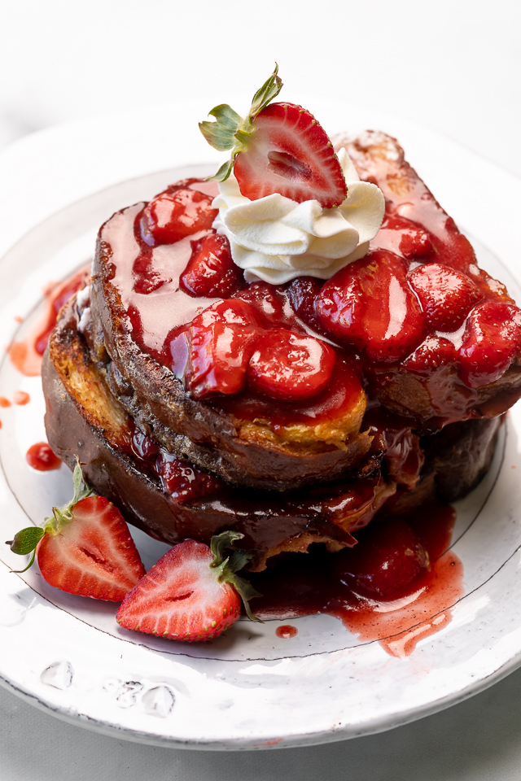

Strawberry French Toast
Savor the goodness of Strawberry French Toast
— golden slices of bread, dipped in sweetness, topped,
with fresh strawberries. A simple delight for a delightful
morning.
5 out of 5 Stars

Prep Time
Cook Time
Total Time
10 min
10 min
20 min
Ingredients
- 4 slices of bread
- 2 large eggs
- 1/2 cup milk
- 1 teaspoon vanilla extract
- 1/2 teaspoon ground cinnamon
- Butter for cooking
- Fresh strawberries, sliced (for topping)
- Maple syrup (optional)
Instructions
- In a shallow bowl, whisk together eggs, milk, vanilla extract, and ground cinnamon until well combined.
- Heat a skillet or griddle over medium heat and add a pat of butter to coat the surface.
- Dip each slice of bread into the egg mixture, ensuring both sides are well-coated.
- Place the coated bread slices on the hot skillet and cook until golden brown on both sides, about 3-4 minutes per side.
- Once the French toast is cooked, transfer it to a plate.
- Top the French toast with sliced fresh strawberries.
- Optionally, drizzle with maple syrup for added sweetness.
- Serve immediately and enjoy!
2 Comments